网络双工术语全双工半双工单工TCPTCP报文头【20个字节】三次握手SYN超时四次挥手TCP滑动窗口UDPUDP报文头【8个字节】TCP和UDP区别HTTP请求结构 响应结构请求响应步骤浏览器输入URL后，流程HTTP状态码GET POST区别HTTP 和 HTTPS加密方式HTTPS传输流程区别数据库关系型数据库设计索引B-TreeB+TreeB+树与B-树的区别Hash索引索引分类InnoDB索引密集索引和稀疏索引聚簇索引和非聚簇索引 [不是一种单独的索引类型，而是根据存储方式划分的种类]优化慢查询联合索引的最左匹配原则锁种类表级锁 行级锁ACID事务四大特性不同的隔离级别和问题InnoDB 默认事务隔离级别RR如何避免幻读使用快照读 一定程度避免幻读快照怎么实现? MVCC使用next-key锁 避免当前读产生的幻读Gap锁 范式第一范式第二范式第三范式分表 分区 分库分表 分区JVM面试题 对java的理解平台无关性什么是反射JVM结构 JVM内存模型程序计数器 PC Register虚拟机栈 JVM Stack栈帧本地方法栈 Native Method Stack堆 Heap新生代和老年代堆栈大小参数调优方法区 Method Area方法区的一种实现 永久代PermGen Space永久代(PermGen)和元空间(Metaspace)常量池String intern 在不同JDK版本的区别JVM如何加载class文件? 类的加载过程类加载器ClassLoader类加载器种类双亲委派模型 [Parents Delegation Model]ClassLoader对象loadClass 和 Class.forName 区别GC引用类型判断对象生存还是死亡引用计数算法可达性分析算法[Java使用此算法]被回收的对象finalize方法垃圾回收算法标记-清除算法 Mark and Sweep复制算法 Copying标记-整理 Mark-Compact分代收集算法 Generational CollectorMinor GC 和 Major GC/ Full GC对象分配策略新生对象分配到新生代的Eden区对象从新生代晋升到老年代垃圾回收器Garbage Collectors [垃圾回收算法的实现]Stop-the-world [STW]OopMap[Ordinary Object Pointer Map]安全点[Safepoint]垃圾回收器分类新生代的垃圾回收器 SerialParNewParallel Scavenge老年代的垃圾回收器 Serial OldParallel OldCMS[Concurrent Mark Sweep]G1[Garbage First]垃圾回收参数调优各个回收器组合-XX:+UseSerialGC-XX:+UseParNewGC-XX:+UseParallelGC-XX:+UseParallelOldGC-XX:+UseConcMarkSweepGCJVM默认参数 GC回收器多线程与并发面试题Thread中start和run方法的区别Thread 和 Runnable 的区别如何给run传参数处理线程返回值sleep和wait区别notify 和 notifyAll 区别锁池 EntryList等待池 WaitSetThead.yield()Thread.interrupt()如何中断线程Java中线程状态synchronized底层实现原理Monitor重入HotSpot对锁的优化synchronized的4种状态自旋锁和自适应自旋锁消除锁粗化偏向锁ReentrantLock 再入锁Java内存模型 JMM指令重排序Happens-beforevolatilevolatile的可见性单例类的双重检验volatile 和 synchronized的区别CAS [Compare and Swap]ABA问题线程池为什么会用线程池Java线程池框架Executor接口ExecutorService接口ScheduledExecutorService接口ExecutorsJava异常异常机制主要回答三个问题异常体系集合HashMap减少hash碰撞为什么Map大小总是${2^n}$put(K key, V val)使HashMap线程安全ConcurrentHashMapput(K key, V Val)JUC包并发工具类CountDownLatchCyclicBarrierSemaphoreExchanger并发集合类BlockingQueue实现类 都是线程安全的。IOBIO 阻塞IONIO 非阻塞IOChannelBufferSelector IO多路复用AIO 异步IO对比Spring特点Spring优点Spring中的模块依赖倒置&控制反转[IOC]&IOC容器&依赖注入DI 的关系Srping IOCIOC初始化过程Spring IOC容器的核心接口BeanFactoryBeanFactory体系结构ApplicationContextBeanDefinitionBeanDefinitionRegistrySpring Bean作用域Bean生命周期创建过程销毁过程Spring AOPAOP的3中织入方法主要名词Spring 事务事务隔离级别Linux查找文件命令 find管道操作符 |筛选内容命令 grep-o "pattern" 不显示整行，只显示匹配区域的内容-v "pattern" 过滤匹配的行不显示awk sedpipelineRedis面试题海量key中查询出某一个固定前缀的key如何通过Redis实现分布式锁setnxset大量key同时过期如何hs用Redis做异步队列rpush+lpop/blpoppublish subscribeRedis如何做持久化RDB 快照持久化AOF 保存写状态持久化RDB-AOF混合持久化方式Redis 数据恢复RDB AOF优缺点Memcache和Redis区别为什么Redis这么快File Descriptor [FD]数据类型命令key相关String 相关hash 相关list 相关set相关sorted set相关Maven生命周期
网络
双工术语

全双工
允许数据在两个方向上同时传输。
半双工
数据可以两个方向上传输，但是不能同时传输。
单工
数据只可以单向传输。
TCP
简介：
面向连接的、可靠的、基于字节流的传输层通信协议
将应用层数据分割成报文段并发送给目标节点的TCP层
数据包有序号，对方收到则发送ACK确认，没收到ACK报文则重传
checksum[校验和]来校验，发送和接收都要计算
TCP报文头【20个字节】
源端口、目的端口【source port 、destination port 】： 各占2个字节，所以端口号最大值65,535。TCP、UDP都不包含IP地址信息，只有端口来标识进程。计算机本地进程可以依靠唯一的进程PID来标识，但是远程两台机器PID不唯一，要依靠源端口、目的端口来标识。【IP层ip地址用来唯一标识主机，传输层端口号标识唯一进程】
序号【sequence number】： 占4个字节。报文的序号。
ACK number： 占4个字节。ACK报文中使用。此数值表示期望下一个收到的报文的序号值。
offset： 占1个字节。表示TCP报文的数据距离TCP报文的开始有多远，中间有TCP报文头。
TCP flags： 占1个字节。共8个标志位。 URG:紧急指针标志 x ACK:确认序号标志。0:报文中不含确认信息，忽略ACK number字段 PSH:1:报文会被直接push到应用层，而不在缓冲区等待 RST:重置连接标志。 x SYN:同步序列号，用于建立连接。[SYN=1无数据。] x FIN:finish标志。用于释放连接。
window： 占2个字节。表示滑动窗口大小，发送数据的速率。
Checksum： 占2个字节。奇偶校验，对整个报文段TCP头部和数据进行计算。
Urgent Pointer： 占2个字节。URG=1时有用，表示紧急数据的大小。
TCP Options
三次握手
- A发送连接请求报文，[SYN=1,ACK=0,seq=x x为任意整数]。连接状态从关闭【closed】到同步信息发送【 SYN-SENT】。
- B接收到请求。连接状态从关闭、监听到同步接受【SYN-RCVD】。并且发送回馈报文[SYN=1,ACK=1,seq=y y为任意整数, ack=x+1]。
- A接受到报文。转态转为连接已建立[ESTABLISHED] 。并返回报文[SYN=0,ACK=1,seq=x+1,ack=y+1]。B接受到报文。转态转为连接已建立。
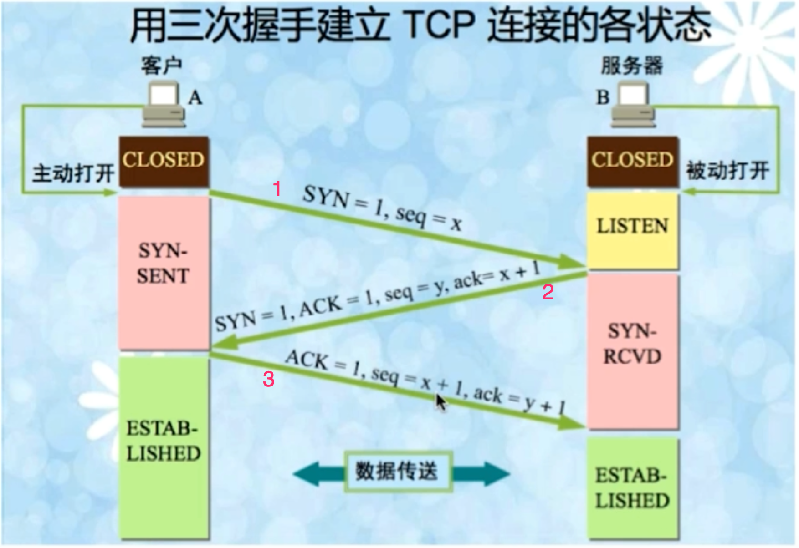
1、2报文段不可携带数据。即SYN=1。但3可以携带，也可不带。
SYN超时
问题：
- Server收到SYN，并且回复了SYN-ACK，但没收到Client的ACK。此时连接未失败也没成功。解决方案：设置了时间，超时算失败。
- SYN Flood。攻击者在超时前，用多个不同机器发送SYN请求连接，使请求队列满了，不可接受更多请求。解决方案：SYN队列满后，设置tcp_syncookies参数，如果其他计算机回发次参数，即使不在SYN队列中，也可以建立连接。
- 机器故障。机器会通过发送报文，检测对方机器是否正常，如果没有回复则认为机器不正常，断开连接。
四次挥手
- A已无数据需要发送，因此向B发送关闭连接请求[FIN=1, seq=u]状态从Established转到Fin-wait1
- B收到后，回复[ACK=1, seq=v, ack=u+1]，转态转为close-wait。A收到后，状态转为Fin-wait2，等待B发送剩余数据。
- B在发送完数据后，发送[FIN=1,ACK=1,seq=w,ack=u+1]，转态转为Last-ACK
- A回复[ACK=1,seq=u+1,ack=w+1]，状态转为Time-wait在一段时间后转为Closed。B在收到回复后转为Closed转态。
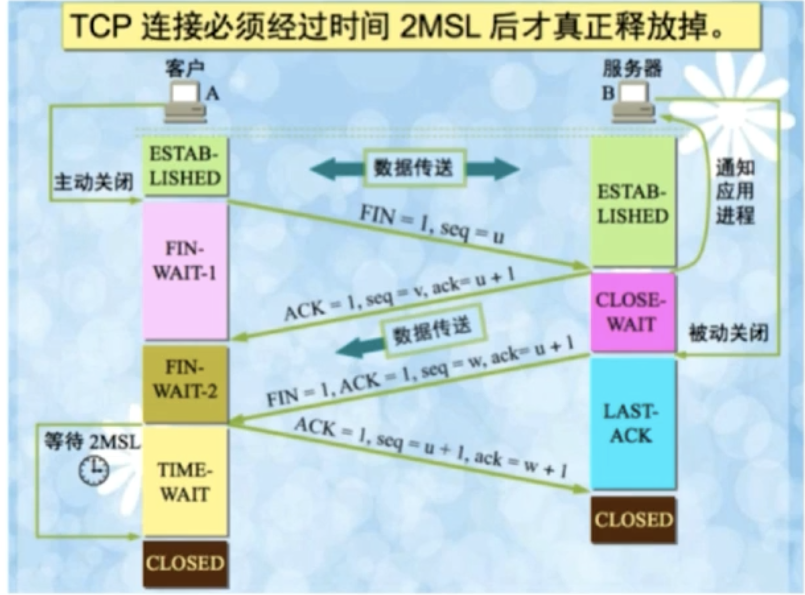
Time-wait转态作用：确保被动关闭连接方收到第四次挥手的ACK，如果没收到被动方会再次发送Fin报文。
被动关闭连接方一直处于Close-wait状态：可能是程序没发送ACK回复，这可能造成过多资源一直被占用，然后无法建立新连接。
TCP滑动窗口
作用：
- 保证可靠性。乱序重排
- TCP流量控制
UDP
简介：
- 面向非连接。
- 不维护连接，支持同时向多个客户发送相同消息。
- 报头数据占8个字节。额外开销小。
- 吞吐量不受拥挤控制算法的调节。
- 尽最大努力交付，不保证可靠
- 面向报文，不对报文信息进行拆分、合并。应用程序需要控制报文大小。
UDP报文头【8个字节】
源端口、目的端口： 各占2个字节。
TCP和UDP区别
- 面向连接vs非面向连接
- 可靠vs不可靠
- 有序性vs无序性
- 慢vs快
HTTP
请求结构
请求行、请求头部、请求数据。
x请求方法 请求地址 协议版本头1: 内容1头2: 内容2...头n: 内容n数据--------------------------------------------------------GET URL HTTP/1.1Host: ......: ......data
响应结构
响应行、响应头、响应体
xxxxxxxxxx协议版本 转态码头1: 内容1头2: 内容2...头n: 内容n数据---------------------------------------------------------HTTP/1.1 200 OK..: .....: ...data
请求响应步骤
- 客户端Socket建立简介到web服务器。
- 客户端发送HTTP请求。
- 服务端接受请求返回HTTP响应。
- 释放TCP连接。[如果是HTTP1.0，客户端被动关闭。1.1则保持连接]
- 客户端解析HTML内容。
浏览器输入URL后，流程
- DNS解析，获得目的IP地址
- 建立TCP连接
- 发送HTTP请求
- 服务器处理请求，返回数据
- 浏览器解析HTML
- 连接结束。
HTTP状态码
1xx 请求已接收，继续处理 2xx 请求成功 3xx 重定向 4xx 客户端错误 请求语法错误或无法实现 5xx 服务器错误
GET POST区别
HTTP报文层面： GET: 请求参数放在URL中 POST：请求参数放在报文数据块中
数据库层面： GET：符合幂等性和安全性，此类请求通常用来查询操作。 【幂等 性：对数据库的一次操作或多次操作都不改变数据结果。】 POST：不符合，因为此类请求通常是用来修改数据的。
其他层面： GET：可以被缓存、被存储。但POST不可以。
HTTP 和 HTTPS
HTTPS会新增SSL层，安全版的安全协议。 SSL[Security Sockets Layer]安全套接层：
- 安全协议
- 是操作系统对外的API。SSL3.0后改名TLS。
- 身份验证、数据加密保证数据安全性。

加密方式
- 对称加密 加密解密使用同一秘钥
- 非对称加密 加密解密使用不同秘钥。公钥、私钥。
- 哈希算法 MD5
- 数字签名
HTTPS传输流程
- 浏览器将支持的加密算法信息发给服务器。
- 服务器选择一个算法，以证书的形式回发给浏览器。
- 浏览器验证证书，结合证书里的公钥，用公钥加密客户生成的秘钥，发送给服务器。
- 服务器解密，获得客户秘钥，验证，返回用客户秘钥加密的响应信息。
- 浏览器用客户秘钥解密响应信息，验证，进行加密交互数据。
区别
- HTTPS需要CA申请证书
- HTTPS密文传输，HTTP明文传输
- 端口不一样，HTTPS 443 HTTP 80
- HTTPS=HTTP+加密+认证+完整性保护
数据库
关系型数据库设计
程序
- 存储管理
- 缓存机制
- SQL解析
- 日志管理
- 权限划分
- 容灾机制
- 索引管理
- 锁管理
存储[文件系统]
索引
索引数据结构:
- 二叉查找树
- B-Tree 【B指代Balance】
- B+-Tree
- Hash结构
- BitMap
B-Tree

定义 m阶树 上图为3阶树
- Root至少有两个孩子
- 每个节点最多有m个孩子
- 节点除root和leaf外，至少有ceil(m/2)个孩子
- 所有leaf位于同一层
设每个节点有n个关键字信息:
- Ki(i=1,2..n)为关键字，且关键字按顺序升序排序
- 关键字个数n必须满足:[ceil(m/2)-1]<=n<=m-1，即比孩子个数[P指针的个数]少1。
- Pi指向关键字范围(Ki-1,Ki)的子树
B+Tree

B+树与B-树的区别
- 非叶子节点的子树指针[P1...Pn]个数与关键字[Ki...Kn]相同。
- Pi指向的子树的数值范围为[Ki，Ki+1)，比如5下的P1指向的子树的数值范围为[5,10)。B-树是都是开区间(Ki,Ki+1)。
- 非叶子节点只用来索引，不存储数据，数据都存在叶子节点中。
- 所有叶子节点都有一个链指针指向下一个叶子节点。更有利于数据库扫描。
Hash索引
缺点
- 只能满足"="，"in"语句，不能使用范围查询语句。
- 无法避免数据的排序操作。
- 当索引是组合索引时候，不能使用其中一个字段做hash索引，只能用组合索引整体做索引，计算hash值。但B+树支持使用组合索引中的部分字段做索引。
- 不能避免表扫描。
- 性能不稳定。大量hash值相等的数据，性能比B+树低。
索引分类
InnoDB索引
- 普通索引
- 主键索引
- 唯一索引
密集索引和稀疏索引

密集索引: 每一个数据记录都有对应的索引项
稀疏索引: 部分数据记录有索引项
?MyISAM: 所有索引都是稀疏索引。
InnoDB: 主键索引作为密集索引。
- 若果有主键被定义，该主键索引作为密集索引
- 没有定义主键，该表的唯一非空字段索引作为密集索引
- 不满足上述条件，内部生成一个隐藏的主键，此主键索引作密集索引
聚簇索引和非聚簇索引 [不是一种单独的索引类型，而是根据存储方式划分的种类]
聚簇索引 数据行存放在索引的叶子节点下。一个表只有一个聚簇索引。 非聚簇索引 数据行和索引分开存放。

MyISAM: 使用非聚簇索引，把数据和索引分开存储。
InnoDB: 主键索引是聚簇索引[也是密集索引]。其他索引都是非聚簇索引【有称不能叫非聚簇索引，说这个词是针对MyISAM的】，又称作二级索引/辅助索引，因为用这些索引要查询两次才能定位到数据，它们的叶子节点都存放的是主键值，通过这个主键值到之间索引处进行二次查询。
优化慢查询
- 用日志定位慢查询sql
- 用explain分析查询sql
- 修改sql或者让sql尽量走索引
联合索引的最左匹配原则
联合索引: 由多列组成的索引。内部数据是按照建索引时字段(a1,a2...,an)顺序给数据排序。
设联合索引有N个字段(a1,a2...,an)，where语句有多个条件语句(s1,s2...)。MySQL从联合索引从最左边字段a1开始向右匹配，如果where语句不包含这字段或此语句是范围语句[<,>,between,部分like(like以%开头不用索引，以明确字符开头使用索引)]，则停止匹配，该字段以前的字段都可以用索引。
锁
种类
按锁级别划分 读锁/共享锁、写锁/排它锁
一个资源可以同时存在多个读锁/共享锁。当存在1个写锁/排它锁时，不能有任何锁，直到这个锁释放。一个写锁/排它锁只能等资源没有任何锁的情况下，占有这个资源。
| 写锁/排它锁 | 读锁/共享锁 | |
|---|---|---|
| 写锁/排它锁 | 冲突 | 冲突 |
| 读锁/共享锁 | 冲突 | 兼容 |
按锁的粒度 行级锁、表级锁、页级锁
按加锁方式 自动锁、显示锁
按操作方式 DML锁、DDL锁
按使用方式 乐观锁、悲观锁
表级锁 行级锁
MyISAM用的是表级锁，不支持行级锁。 InnodDB支持行级锁[索引查询]，也支持表级锁[非索引查询]。根据情况选用不同的锁。
| 行级锁 | 表级锁 | |
|---|---|---|
| MyISAM | 不支持 | 支持 |
| InnoDB | 支持[操作加锁并且走索引是行级锁] | 支持[操作加锁并且不走索引是表级锁] |
InnoDB中，普通的select是不加任何锁的。 读锁/共享锁，select末尾加上lock in share mode。 写锁/排他锁，seledt末尾加上for update。
ACID事务四大特性
A 原子性: 事务里的所有操作是一个工作单元，要不全部发生，要不全部回滚。
C一致性: 事务开始前后，数据库的完整性和业务逻辑上的一致性不被破坏。
I隔离性: 事务之间即时操作相同的数据也互不影响。
D持久性: 事务提交后，数据更变后应该永久保存，不会被回滚。
不同的隔离级别和问题
| 隔离级别 | 脏读 | 不可重复读 | 幻读 |
|---|---|---|---|
| READ UNCOMMITTED | Y | Y | Y |
| READ COMMITTED | N | Y | Y |
| REPEATABLE READ | N | N | Y |
| SERIALIZABLE | N | N | N |
InnoDB 默认事务隔离级别RR如何避免幻读
幻读: 事务A不同时间同样的sql，返回结果不同，因为事务B在期间对数据操作并且提交。例如select count(1) from student;，返回不同的结果。
使用快照读 一定程度避免幻读
快照读 [不加锁的数据读取]
- 读取的是数据快照，数据被修改，快照无法察觉，所以不会产生幻读。
- 不加锁的非阻塞select是快照读。普通的select[RR级别下，不加锁]读取到的是快照，事务中直到第一次调用此select时，才会对数据进行快照。
快照怎么实现? MVCC
undo日志 事务提交update/delete/insert的时候，相关的数据行记录到undo日志里，日志里保存了修改前旧版本数据的内容。当操作相关数据行的所有事务提交后，这些记录会被删除。

快照读过程 快照读的时候，在undo日志中，找小于等于当前事务版本号的记录。版本号其实是上图的DB_TRX_ID[事务ID，后发生的事务ID比较大]
使用next-key锁 避免当前读产生的幻读
当前读[加锁的数据操作]
读取数据的最新版本，所以当有其他事务提交时，会产生幻读。
以下都是使用当前读，即加锁的数据操作
- 加锁的select。select ... lock in share mode / for update
- update/delete/insert
InnoDB为了避免当前读时产生幻读，会使用next-key锁，对读取的数据进行加锁，不得被修改。
next-key锁 行锁+Gap锁[间隙锁]
Gap锁
设被上Gap锁的区间为A区间，阻塞情况有 insert 在A区间内的记录会阻塞。 update 把A区间外的索引，update成A区间内都会被阻塞。
在使用当前读的情况下:
使用主键索引或者唯一键索引
- where命中的条件，只有行锁，没有Gap锁。
- where没命中的条件，会用为没命中的索引上Gap锁。索引按照(主键/唯一索引)规则排序，区间为距离这索引最近的左右两个索引值(l,r)。
使用普通索引
- 无论条件是否命中，都使用Gap锁。
- 索引按照(普通索引，主键索引)规则排序，无论where条件是否命中，都会加Gap锁。区间为距离这索引最近的左右两个索引值(l,r)，而且对普通索引命中的记录主键要上行锁。
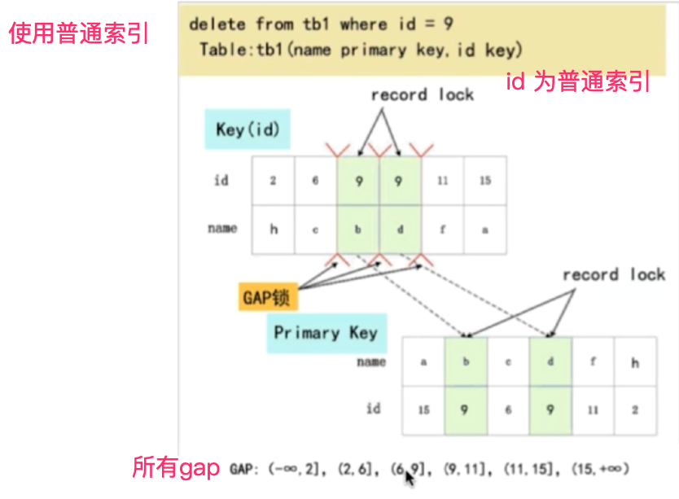
不使用索引
- 会锁住所有gap，而且会使用表锁。事务提交前，其他事务的当前读会阻塞。
范式
第一范式
数据库表中的所有字段值都是不可分割的原子值
第二范式
满足第一范式,表中的字段必须完全依赖于全部主键而非部分主键。
第三范式
满足第二范式，非主键字段必须互不依赖。
分表 分区 分库
分表 分区
分表是把一个表分成实体存在的多个表。分表后，单表的并发能力提高了，磁盘I/O性能也提高了。重点是存取数据时，提高mysql并发能力上。
分区还是只有一个表，只是这个表的数据被分成不同的区块存储。重点突破磁盘的读写能力，从而达到提高mysql性能的目的。
JVM
面试题
对java的理解
平台无关性 GC 语言特性 面向对象 类库 异常处理
平台无关性
一次编译，到处运行。源码被编译成字节码文件，不同平台的JVM加载字节码文件，最终解释成机器码运行，不用重新编译。[javap是jdk自带的反编译工具，可用来反编译字节码]
什么是反射
Java反射是指运行时，对于类，可以知道它的所有方法和属性；对于对象，可以调用它的所有方法和属性。这种动态获取信息和动态调用的功能称为反射。
JVM结构
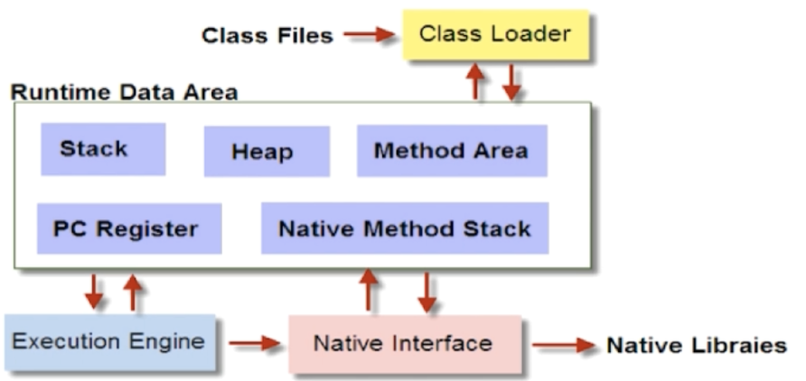
主要4大部分:
- Class Loader[类加载器] 加载class文件到内存
- Runtime Data Area[运行时数据区] JVM内存结构模型
- Execution Engine[执行引擎] 对命令进行解析
- Native Interface[本地库接口] 融合不同的开发语言的原生库为Java所用
JVM内存模型
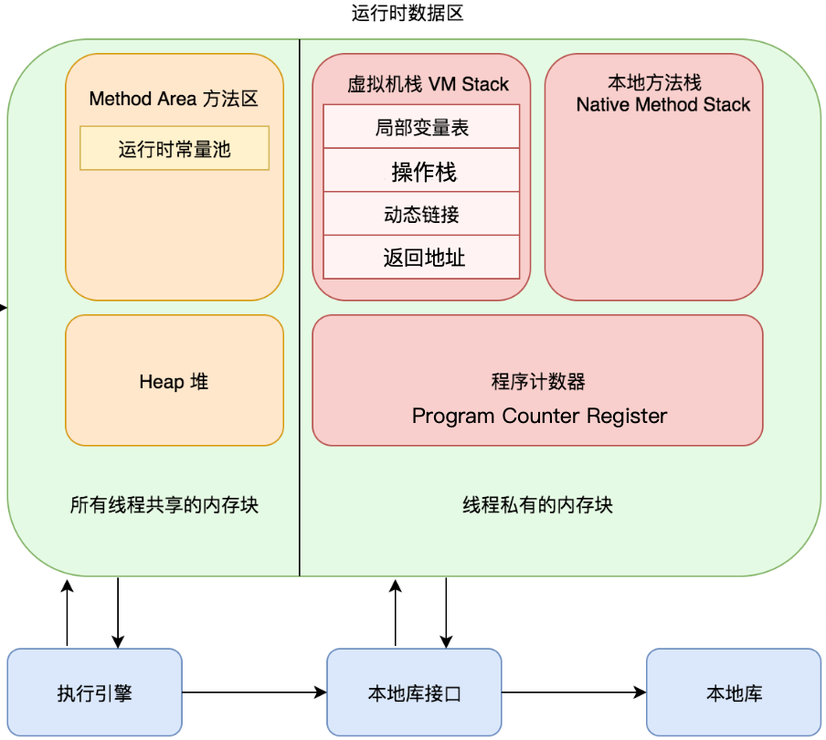
程序计数器 PC Register
- 线程私有
- 当前线程执行的字节码行号指示器
- 改变计数器的值来选取下一条要执行的字节码指令。
- 正在执行java方法，值为字节码指令的地址。native方法，则为空值Undefined。
- 唯一一个在JVM规范中没有规定OutOfMemoryError情况的区域。
虚拟机栈 JVM Stack
线程私有，生命周期与线程相同。
自动释放内存。
保存java方法执行的数据结构栈帧。
JVM规范定义了两种异常
- StackOverflowError 栈深度大于虚拟机的允许(即方法嵌套过多，比如递归深度过深)。
- OutOfMemoryError 栈的内存过大，扩展内存时，无法申请到足够大的内存。比如创建N个线程。
栈帧
每个方法在执行的同时会产生一个叫栈帧的数据结构。方法调用到执行完成，对应着栈帧在虚拟机栈中的入栈到出栈。 数据结构包含以下信息:
- 局部变量表 保存编译器可知的基本数据类型和对象引用
- 操作数栈
- 动态链接
- 方法出口
- ...
本地方法栈 Native Method Stack
- 本地方法栈与虚拟机栈相似，只不过本地方法栈是为native方法服务。
- JVM规范没有强制规范其实现方式、数据结构，虚拟机可以自由实现。
- 有的虚拟机把虚拟机栈和本地方法栈合并。
- 与虚拟机栈一样会有StackOverflowError 和 OutOfMemoryError。
堆 Heap
- 线程共享。所有线程共享这块区域。
- 虚拟机启动时创建，用于存放对象实例。
- 物理上不连续但逻辑上连续的存储空间。
- GC垃圾收集的主要管理区域。
- OutOfMemoryError 产生过多没有对象实例，而且未被GC回收。
新生代和老年代
JDK1.7 1.8 中，HotSpot将堆划分为新生代和老年代。 新生代又划分为: 一个Eden、两个Survivor空间。比例是8:1:1。
堆栈大小参数调优
-Xss 规定每个线程虚拟机栈/堆的大小
-Xms 堆的初始大小
-Xmx 堆能达到的最大值
-Xmn 设置新生代大小
一般设置 -Xms 和 -Xmx 一样大小，因为内存扩大会影响程序运行。
方法区 Method Area
- 线程共享。
- JVM规范中，方法区在虚拟机启动的时候创建，虽然方法区是堆的逻辑组成部分，但是简单的虚拟机实现可以选择不在方法区实现垃圾回收与压缩。
- 存储被虚拟机加载的类信息、常量[常量池 Runtime Constant Pool，后来被移动到堆中]、静态变量等数据。
- OutOfMemoryError 无法满足内存分配需求。[程序运行时，动态加载过多的类]
方法区的一种实现 永久代PermGen Space
方法区[Method Area]是JVM的一种规范，而永久代是Hotspot虚拟机对这种规范的一种实现。 JDK1.7时，永久代中的常量池被移除到堆Heap中。 JDK1.8时，用元空间代替永久代。
永久代(PermGen)和元空间(Metaspace)
HotSpot虚拟机在1.8之后已经取消了永久代，改为元空间，类的元信息被存储在元空间中。元空间没有使用堆内存，而是与堆不相连的本地内存区域。
常量池
原本在永久代中，但后来被放到堆中，可以避免一些OutOfMemoryError，常量池大小不受永久代大小约束。
String intern 在不同JDK版本的区别
如果常量池中，存在次字符串，则这个字符串; 如果常量池中不存在: JDK1.6: 将创建此字符串的副本放入常量池，但是副本是个新对象，引用地址不相同。 JDK1.6后: 将次字符串的引用放到常量池，而不是创建一个新的副本。
JVM如何加载class文件?
类的加载过程
- 加载阶段 ClassLoader加载字节码进内存，生成java.lang.Class对象放在方法区中[Method Area]
- 连接阶段 此阶段部分内容与加载交叉进行，例如验证字节码 2.1 验证 检查字节码是否符合规范，不会危害JVM。 2.2 准备 为类变量分配内存和设置零值[而不是初始化的值]，而初始化值是在初始化阶段进行。但如果类变量的值是常量[修饰符static final]，那么会直接设置初始化值。 2.3 解析 将常量池内的符号引用转为直接引用。
- 初始化阶段 执行类构造器
()[所有类变量的赋值动作+static代码块]
类加载器ClassLoader
作用: 在类加载过程中的加载阶段，负责将字节码文件加载进内存，所有Class都由ClassLoader加载进内存。
类加载器种类
- BootStrapClassLoader C++编写，加载核心库java.*
- ExtClassLoader Java编写，加载扩展库javax.*
- AppClassLoader Java编写，加载程序所在目录/classpath的类
- 自定义ClassLoader
双亲委派模型 [Parents Delegation Model]
除了顶层类加载器，其它加载器都有父类加载器。他们之间并没有java继承关系，是逻辑上的父类

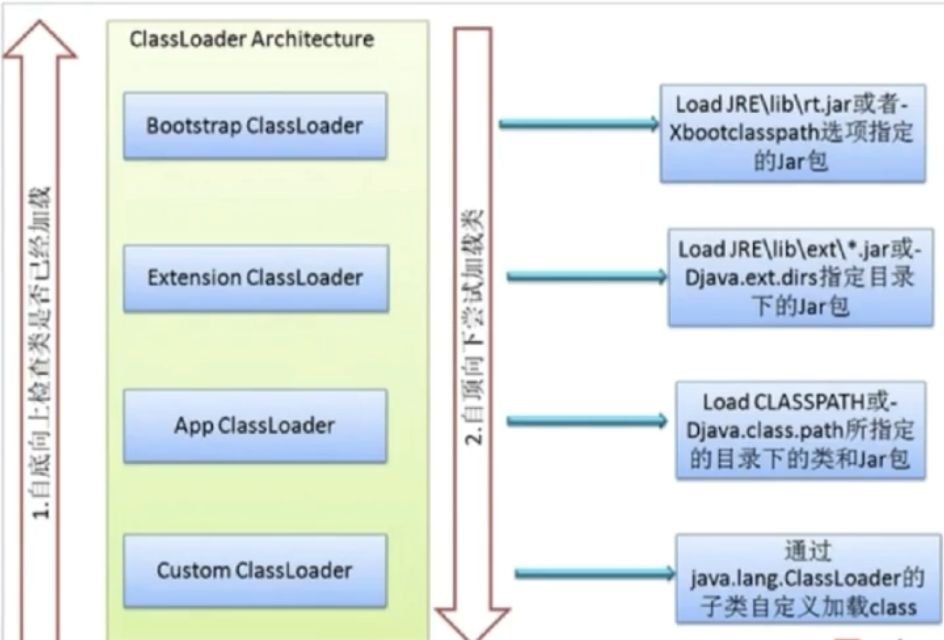
ClassLoader加载类的过程 当一个类加载器接受到类加载的请求
从当前加载器开始查询是否已将加载过此类，
- 有，则返回
- 没有，则委托父类加载器
如果最终到顶层启动类加载器也没有加载过此类。那么会从顶层开始尝试加载目标类。
- 加载成功，则返回。
- 加载失败，就是当前加载器加载不到目标类，那么会向下层委托加载目标类。
- 没有加载器能加载到目标类，则抛出ClassNotFoundException异常。
为什么使用双亲委派模型加载类? 避免字节码被多次重复加载。
ClassLoader对象loadClass 和 Class.forName 区别
loadClass: 加载类并没有到连接阶段，不会执行static代码块。 forName: 加载类完成了初始化阶段，会执行static代码块。
在Spring中使用loadClass作为延迟加载，加快启动速度。类的初始化工作留到实际使用到这个类的时候再做。
GC
引用类型
| 引用类型 | 被GC回收情况 | 用途 | 生存时间 |
|---|---|---|---|
| 强引用 | 从来不会 | 对象一般状态 | JVM停止运行时终止 |
| 软引用 | 内存不足时 | 缓存 | 内存不足时终止 |
| 弱引用 | 发生GC时 | 缓存 | 发生GC后终止 |
| 虚引用 | - | 标记、哨兵 | - |
判断对象生存还是死亡
引用计数算法
实现: 给对象添加一个引用计数器，每当有一个地方引用就+1，引用失效-1。当这个值为0时，意味对象死亡。
优点: 实现简单，效率快。 缺点: 无法解决循环引用问题，会导致内存泄露。
可达性分析算法[Java使用此算法]
实现: 把GC Roots作为起点，对象作为终点，检查对象是否可达，如果能找到一条路径[引用链]到一个对象，那么这个对象存活，否则死亡。
可作为GC Roots的对象
- 虚拟机栈[栈帧中的本地变量]中引用的对象。
- 方法区中类静态属性引用的对象。
- 方法区中常量引用的对象。
- 本地方法栈中JNI[Java Native Interface，即Native方法]引用的对象。
被回收的对象
GC会回收真正死亡的对象。真的死亡指对象不可达，并且无法通过finalize方法成为可达的对象。
一个对象要被回收需要两次标记，第一次标记证明对象不可达，第二次证明对象执行finalize后也不可达。 第一次: JVM中，不可达的对象被标记。 第二次: 没必要执行finalize的对象[没覆盖finalize方法或者JVM曾调用过一次]；有必要执行，但执行后，对象还是不可达的对象。
finalize方法
特点:
- 只运行一次
- 不保证能运行到结束。
当一个对象有必要执行finalize方法，此对象会被放入F-Queue队列中，随后JVM用Finalizer线程去执行finalize方法。
垃圾回收算法
标记-清除算法 Mark and Sweep
它是最基础的算法，后续算法都是根据此算法不足进行改进得到的。
实现:
- 标记 标记需要被回收的对象。
- 清除 标记完成后统一回收被标记的对象。
缺点:
- 效率不高。标记和清除效率不高。
- 空间碎片化。回收后空间不连续，影响大对象的空间分配，当没有足够大的内存分配给大对象时，会体检触发另一次垃圾回收。
复制算法 Copying
这个算法解决标记-清除算法的两个问题，效率低和空间碎片化。一般适合新生代。
实现: 将一块内存分为大小相同的两块，只使用其中一块。当一块用完，就将存活对象复制到另外一块空闲内存中[此块内存是按顺序填充，不会出现碎片化内存]，然后清理已使用的内存块。
优点: 效率高。空间连续。
缺点: 会浪费部分空间，所以只适合对象存活率低的场景。
JDK1.7 1.8，HotSpot默认对新生代区域使用此种算法。Eden区只会向外复制，不会有对象复制进Eden，新创建对象放在Eden区，两个Survivor作为相互复制的两块内存，同一时间只有Eden区加1个Survivor区作为存储空间，只有1个Survivor区的空间(10%)被浪费，当发生垃圾回收时，Eden区和一个Survivor区的对象复制到另一个Survivor区。
堆内空间分配：Eden + Survivor + Survivor [8:1:1]

标记-整理 Mark-Compact
这个算法适合对象存活率高的场景，而且没有碎片化空间。一般适合老年代。
实现: 与标记-清理算法相似。但第二步，不是清理，而是整理。整理是把存活对象向前移动覆盖掉被回收的对象，使内存空间连续，末端内存全部回收。

分代收集算法 Generational Collector
根据对象的不同的生命周期划分区域，对不同区域使用不同的回收算法。 新生代[Young Generation]对象存活率低: 使用复制算法。每次回收有大批对象死去，不需要太多空间，使用标记-清理/整理效率慢。 老年代[Old Generation]对象存活率高: 使用标记-清理/整理。每次回收有大批对象存活，需要大量空间，使用复制算法可能会空间不足。
| JDK1.6 JDK1.7 栈分区+老年代 | JDK1.8 栈分区[老年代被移除] |
|---|---|
| 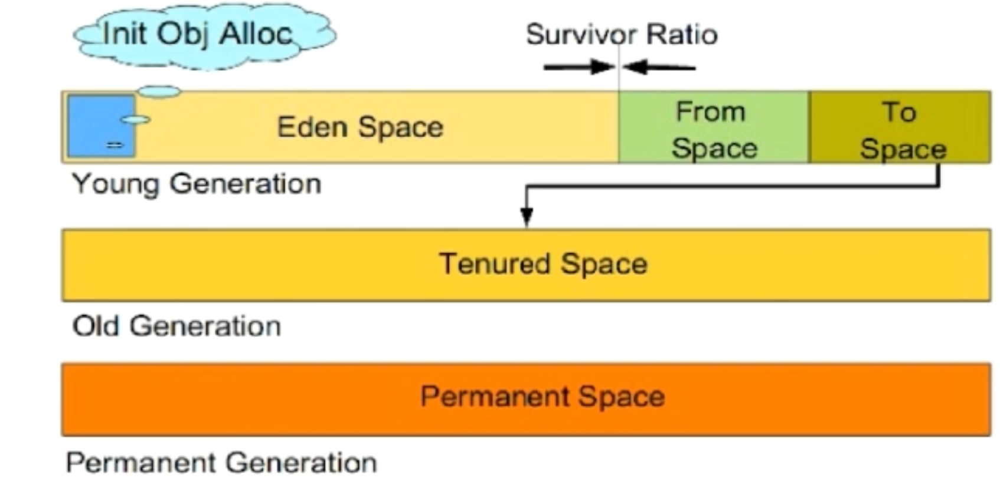 | 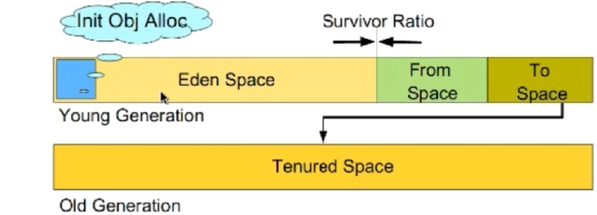 |
Minor GC 和 Major GC/ Full GC
Minor GC: 发生在新生代的垃圾回收。频繁，速度较快。 Major GC/ Full GC: 发生在老年代的垃圾回收。不频繁，速度一般比Minor GC慢10倍以上。
Major GC/ Full GC触发条件:
- 老年代空间不足
- 永久代空间不足
- Minor GC后产生晋升老年代的对象，在老年代没有足够空间存放。
- 调用System.gc()
对象分配策略
新生对象分配到新生代的Eden区
Eden有足够空间，新对象会被分配到Eden区。
Eden空间不够，触发Minor GC后，
- 空间足够，将新对象放到Eden区。
- 空间依然不足，新对象将会放到老年代区域。
对象从新生代晋升到老年代
- 长期存活的对象。经历一定次数Minor GC，依旧存活的对象。[-XX:MaxTenuringThreshold 设置次数，超过这个次数放入老年代]
- GC后，新生代空间依然不足以放下的对象。当Eden装不下一个对象时，先触发Minor GC后，Eden区或Survivor区依旧放不下的对象。
- 新生成的大对象。[-XX:PretenuerSizeThreshold 设置大对象大小，超过这个大小直接放入老年代]
垃圾回收器Garbage Collectors [垃圾回收算法的实现]
Stop-the-world [STW]
xxxxxxxxxxGC发生时必须停顿所有线程，为了保证可达性分析的准确性，不停顿那么对象可达性会有不断变化。
OopMap[Ordinary Object Pointer Map]
通过OopMap，JVM可以得知对象引用存放的位置[可作为GC Roots的对象]，不用去不同的内存区中扫描找出对象引用，这可以协助GC Roots的枚举快速完成，以便完成可达性算法
安全点[Safepoint]
- 一个特定的位置，用来生成OopMap。
- 这个位置的选取标准是让程序长时间执行的地方[例如方法调用、循环、异常跳转等]。
- 安全点数量不可过多，过多会影响性能。
垃圾回收器分类
新生代垃圾回收器[专门回收新生代] Serial、ParNew、Parallel Scavenge、G1 老年代垃圾回收器[专门回收老年代] Serial Old、Parallel Old、CMS[Concurrent Mark Sweep]、G1
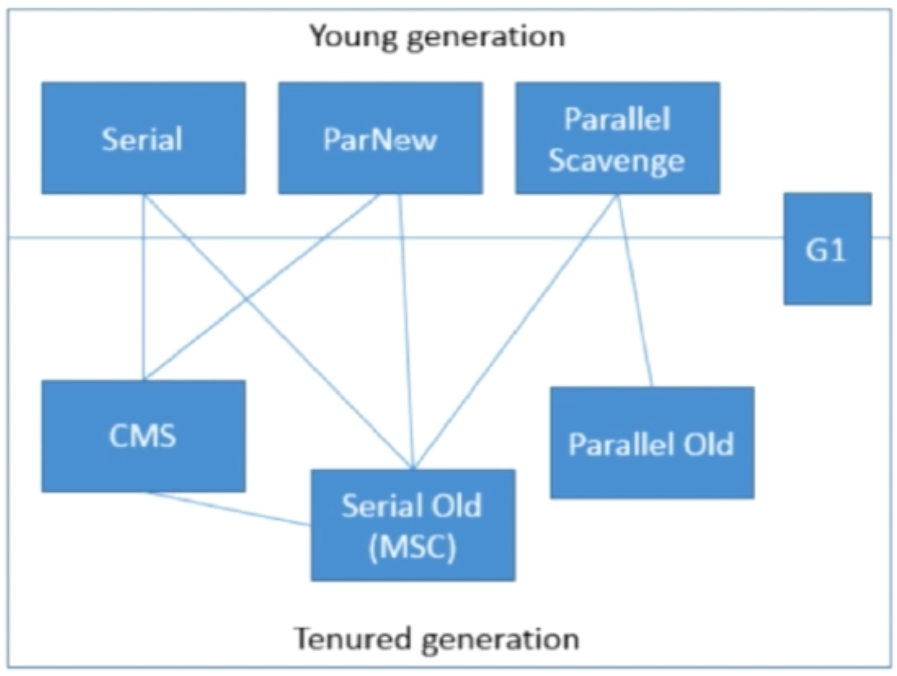
新生代的垃圾回收器
Serial
- 单线程垃圾回收器。
- 采用复制算法回收新生代。
- GC时，暂停所有用户线程。

ParNew
- 多线程垃圾回收器。其实是Serial的多线程版本。
- 也是采用复制算法回收新生代。
- GC时，暂停所有用户线程。
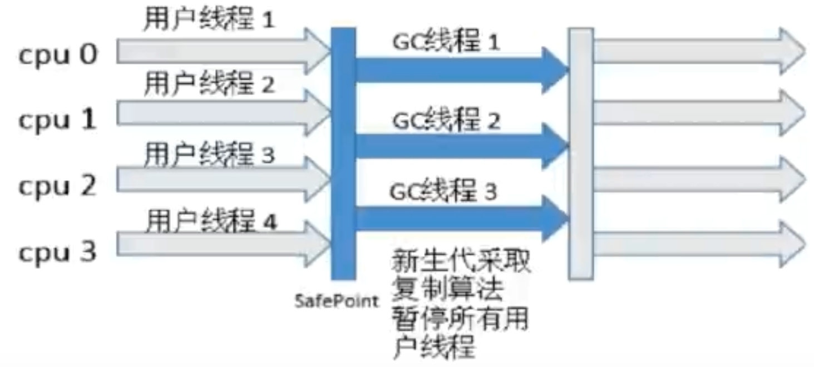
Parallel Scavenge
多线程垃圾回收器。
采用复制算法回收新生代。
GC时，也会暂停所有用户线程。
这个回收器更加注重吞吐量，而不是缩短用户线程停顿时间。有利于提高CPU使用率，主要适合后台运算多且交互少的任务。
控制吞吐量的参数
- -XX:MaxGCPauseMillis GC最长时间
- -XX:GCTimeRatio 吞吐量大小
- -XX:+UseAdaptiveSizePolicy 开启后，有些参数可以自动调配，不用人工调整。
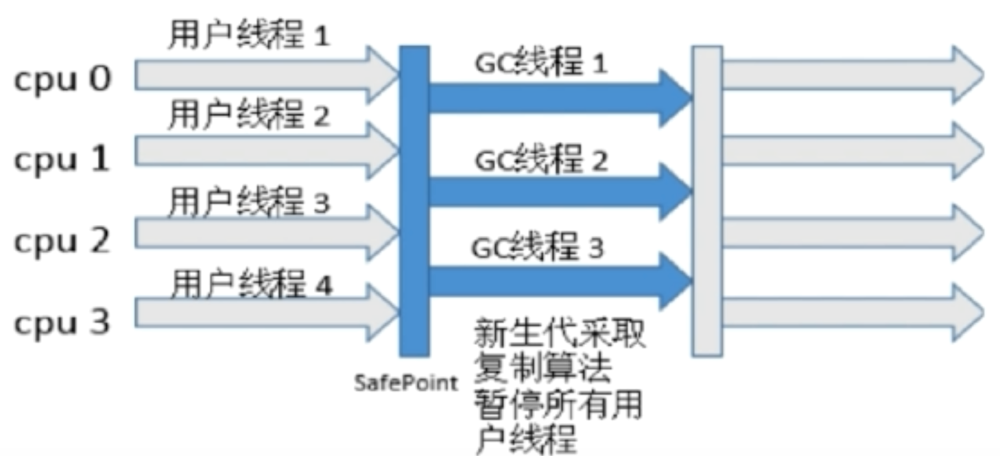
老年代的垃圾回收器
Serial Old
- 单线程垃圾回收器。
- 采用标记-整理算法回收老年代。
- GC时，暂停所有用户线程。
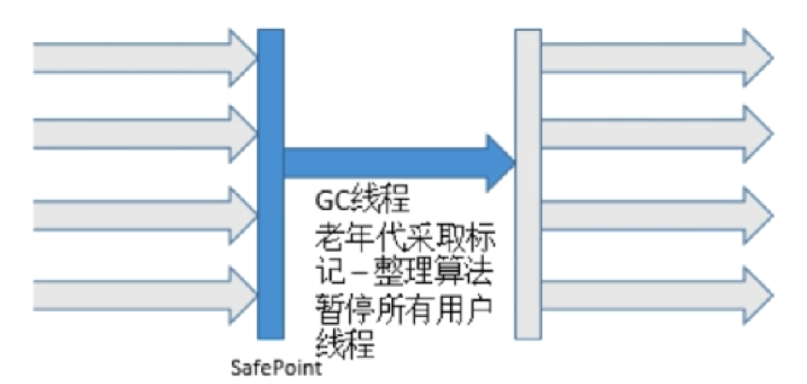
Parallel Old
- 多线程垃圾回收器。
- 采用标记-整理算法回收老年代。
- GC时，也会暂停所有用户线程。
CMS[Concurrent Mark Sweep]
以获得最短回收停顿时间[Stop-the-world]为目标的收集器。
采用标记-清除算法回收老年代。会产生空间碎片。
4个步骤。只有初始标记、重新标记会Stop-the-world，后者会比前者长。并发标记、并发清除耗时长。
- 初始标记[CMS initial mark] 标记GC Roots直接关联的对象，速度快。
- 并发标记[CMS concurrent mark] 追溯GC Roots相连的对象。
- 重新标记[CMS remark] 对并发标记期间因用户线程运行导致标记产生的变动进行修正。
- 并发清除[CMS concurrent sweep]

G1[Garbage First]
- 并行并发
- 分代收集。 新生代使用复制算法。老年代使用标记-整理算法
- 可预测停顿。可以指定停顿时间长度，不超过N毫秒。
- 将堆化成多个区域Region，新生代老年代不再物理隔离，它们由不连续的Region组成。后台维护优先列表，优先回收价值最大的Region。
垃圾回收参数调优
-XX:SurvivorRatio Eden和Survivor的比例，默认8:1。
-XX:NewRatio 新生代和老年代的内存大小比例。
-XX:PretenuerSizeThreshold 对象直接进入老年代的最小阈值。
-XX:MaxTenuringThreshold 设置对象经历GC次数的最大阈值，超过这个次数放入老年代
各个回收器组合
-XX:+UseSerialGC
xxxxxxxxxxSerial + Serial Old
-XX:+UseParNewGC
xxxxxxxxxxParNew + Serial Old
-XX:+UseParallelGC
xxxxxxxxxxParallel Scavenge + Serial Old
-XX:+UseParallelOldGC
xxxxxxxxxxParallel Scavenge + Parallel Old
-XX:+UseConcMarkSweepGC
xxxxxxxxxxParNew + CMS[Concurrent Mark Sweep] + Serial Old[CMS碎片过多时，备用标记-整理]
JVM默认参数 GC回收器
通过命令查询:
xxxxxxxxxx> java -XX:+PrintCommandLineFlags -XX:+PrintGCDetails -version
多线程与并发
面试题
Thread中start和run方法的区别
start: 会创建一个子线程 run: 线程执行的方法
Thread 和 Runnable 的区别
Thread是个类实现了Runnable接口，Runnable接口只有一个run方法。
如何给run传参数
- 构造参数
- 成员变量setter
- 回调函数
处理线程返回值
- 主线程等待直到子线程执行结束。
- 调用子线程Thread的join方法阻塞当前线程直到子线程执行完成。
- 使用Callable接口+[FutureTask+Thread]/[ExcutorService]实现。
sleep和wait区别
- sleep是Thread的方法，wait是Object的方法
- sleep可以在任何地方使用，不会释放锁
- wait只能在synchronized方法或synchronized代码块中使用，会释放锁
notify 和 notifyAll 区别
锁池 EntryList
等待获取排它锁，竞争排它锁的线程集合。
等待池 WaitSet
调用wait方法后，线程进入等待池。
notify: 随机选取一个线程从等待池进入锁池，即让一个等待线程获得竞争锁的资格。
notifyAll: 所有等待池中的线程进入锁池，获得竞争资格。
Thead.yield()
暗示程序调度器，愿意让出CPU时间，但调度器可能会忽视这个暗示。也不会让出锁。
Thread.interrupt()
通知线程应该被中断，但并不会被中断。调用时，
- 线程在等待池中[指wait/timed wait状态]，抛出InterruptedException，并退出当前状态。
- 线程在锁池中[指阻塞Blocked状态]不会抛出任何异常，也不会终止线程。
- 处于活动状态，该线程的中断标记设置为true，然后继续运行，不受影响。
使用方法: 需要被调用的线程配合，在运行时要检查中断标记位，如果为true，就自行中断异常。
如何中断线程
- deprecated方法，不安全 stop方法 suspend方法 + resume方法
- 安全的方法，调用interrupt方法。
Java中线程状态
New[新建] 创建后尚未启动的线程
Runnable[运行] 包括Ready[准备就绪] 和 Running[运行中] 两个状态，这两个状态会因为系统调度或者yield方法相互转换。
- Ready 等待分配CPU时间
- Running 正在运行
Blocked[阻塞] 等待获取排它锁
Waiting[等待] 不会被分配CPU时间，需要显示唤醒
- 没设置时间的 Object.wait() Thread.join() LockSupport.park()
Timed Waiting[超时等待] 一定时间后由系统自动唤醒
- 设置时间的 Object.wait(time) Thread.join(time) LockSupport.parkNanos() LockSupport.parkUntil()
Terminated[终止] 线程结束执行

synchronized底层实现原理
Monitor
synchronized实现依靠Monitor。每个对象都有一个Monitor对象，Monitor是个锁对象。包含以下字段:
- EntryList锁池
- WaitSet等待池
- Owner 指向持有该锁的线程
- Counter 持有该锁的线程数
重入
指一个线程已有某个资源锁时，此线程再次请求同一个资源锁。
synchronized具有可重入性。
HotSpot对锁的优化
synchronized的4种状态
锁的膨胀方向由上到下:
- 无锁
- 偏向锁
- 轻量级锁 使用自旋锁
- 重量级锁
锁的优化:
- 适应性自旋 Adaptive Spinning
- 锁消除 Lock Elimination
- 锁粗化 Lock Coarsening
- 偏向锁 Biased Lock
- 轻量级锁 Lightweight Lock
自旋锁和自适应自旋
自旋锁
许多情况下，共享数据的锁定状态持续时间短，线程的挂起、恢复操作消耗大。对等待线程进行优化，不放弃CPU资源，执行忙循环(自旋)，这就是自旋锁。
缺点: 尽管可设置自旋次数，如果锁被占用很长时间，会带来更多的性能开销。
自适应自旋锁
自旋次数不再固定，由前一次同一个锁上的自旋时间决定。
锁消除
JIT[Just-in-time]编译时，运行环境进行扫描，去除不可能存在竞争的锁。例如StringBuffer的append方法是synchronized方法，如果只有一个线程执行，那么这方法会被当成普通方法而非synchronized方法，提高运行速度。
锁粗化
锁的粒度太细，有时候会导致反复加锁和解锁，加大开销，加大锁的范围，避免反复加锁和解锁。例如下面代码会粗化
xxxxxxxxxxpublic String get(StringBuffer sb){ while(i < 100) { sb.append("h"); //把锁范围扩大到循环体，避免反复加锁、解锁 }}
偏向锁
线程在同步代码中，无竞争时，提高运行速度。偏向第一个获得锁的线程，如果没有另外一个线程获得这个锁，那么偏向的线程再次进入同步代码时可不进行同步操作。
升级为轻量级锁: 当有另一个线程加入竞争时，升级锁。
缺点: 多线程竞争大时，偏向锁是多余的。
ReentrantLock 再入锁
- 和CountDownLatch、FutureTask、Semaphore一样，都是基于AQS[AbstractQueuedSynchronizer]实现。
- 可控性更高，实现比synchronized粒度更小的控制，如控制fairness公平性、判断是否获得锁。
- 可通过Condition实现wait、notify的功能。
- 调用lock()方法后要调用unlock()方法释放锁。
- 性能不一定比synchronized高
- 可重入
fiarness 公平性: 倾向于将锁给等待时间最久的线程。
xxxxxxxxxxReentrantLock fairLock = new ReentrantLock(true); // 公平锁
Java内存模型 JMM
JMM 和 java内存区域划分的区别: JMM是规则、规范，它并不存在，只是定义了各个变量的访问方式，但都存在共享区域和私有区域。
规范:
- 方法中的基本数据类型、对象引用直接存储在工作内存[线程私有]的栈帧中。
- 对象实例、成员变量、类信息、static变量存储在主内存[线程共享]中。
- 主内存的数据操作方式是，线程复制一个副本到工作内存中，完成操作后，写回主内存中。
指令重排序
要满足以下条件:
- 单线程环境不能改变运行结果
- 存在数据依赖关系不能重拍
- 不符合happens-before的规则
Happens-before
- 程序顺序规则: 单线程，前面代码发生在后面代码之前。
- 锁定规则: 前面的解锁操作先于后面的加锁操作。
- volatile变量规则: 对一个变量的前面的写操作先于后面的读操作。
- 传递规则: 如果操作A发生先于操作B，操作B先于操作C，那么操作A先于操作C。
- 线程启动规则: start方法先于此线程的每一个动作。
- 线程中断规则: 前面的interrupt方法先于后面被中断线程isInterrupt方法的执行
- 线程终结规则: 线程中所有操作先于线程终止检测[Thread.join/isAlive...]
- 对象终结规则: 一个对象的初始化先于finalize方法。
volatile
volatile的可见性
非volatile变量的不可见性:
JVM提供的轻量级同步机制
- 可见性。保证volatile的共享变量的修改对所有线程总是立即可见。任何改变都会立刻反映到主内存中。
- 禁止指令重排
volatile为何立即可见？ 写: 将值直接写到主内存中。 读: 每次都从主内存中读取。
单例类的双重检验
用volatile可禁止指令重排，避免错误
xxxxxxxxxxprivate volatile static Singleton instance;public static Singleton getInstance() { if(instance == null) { synchronized(Singleton.class) { if(instance == null) { instance = new Singleton(); // new Singleton();有3个指令，非原子操作，可能发生指令重排 } } } return instance;}/*new Singleton():重排前memory = allocate(); // 1. 分配对象内存空间instance(memory); // 2. 调用instance方法初始化对象instance = memory; // 3. 设置instance指向刚分配的内存空间重排后2和3顺序可能会被调换，此时instance!=null，但初始化还没完成，会发生错误。*/
volatile 和 synchronized的区别
- volatile本质是告诉JVM当期变量在工作内存中的值不确定，要去主内存中读取；synchronized是坐定当前变量，只有当前线程可以访问、操作，其他线程会被阻塞直到变量操作结束。
- volatile只保证可见性，不保证原子性。synchronized两个都保证。
- volatile不造成阻塞；synchronized可能会阻塞。
- volatile标记的变量不会被编译器优化、指令重排；synchronized可以被优化。
CAS [Compare and Swap]
一种高效实现线程安全性的方法，乐观锁lock-free。
实现: 包含3个操作数 内存位置V、预期原值A、新值B，先对比内存中的值是否为A，如果是则修改值为B，否则返回更新失败。
ABA问题
如果一个值是A，然后被改成B，最后又改回B时，如果之对比预期原值会认为这个值没被改变。Java中使用AtomicStampedReference解决ABA问题解决。
线程池
为什么会用线程池
处理大量短时间任务时，会有大量的时间消耗在线程创建和销毁上，线程池可以减少这种消耗。
Java线程池框架

Executor接口和ExecutorService接口为任务执行细节和提交起到解耦作用: Executor接口只负责任务运行。 ExecutorService接口负责任务提交，还有管理线程。
Executor接口
运行任务的简单接口，只负责执行任务。接口只有一个方法:
xxxxxxxxxxvoid execute(Runnable command);
ExecutorService接口
继承Executor接口，提供任务提交、任务管理的接口。
ScheduledExecutorService接口
继承ExecutorService接口，提供定时任务提交的接口。
Executors
使用Executors创建不同的线程池满足不同的需求:
返回ThreadPoolExecutor:
newFixedThreadPool(int) 指定工作线程池
newCachedThreadPool() 处理大量短时间任务的线程池
- 缓存线程来并重用，没有可用缓存线程时，创建新的线程
- 缓存线程闲置时间过长，会被移除缓存、销毁。
- 系统长时间闲置的时候不会消耗资源
newSingleThreadExecutor() 创建单一线程来执行任务，如果线程异常，会创建新的线程取代它。
返回ScheduledThreadPoolExecutor:
- newSingleThreadScheduleExecutor()和newScheduledThreadPool(int) 定时任务，区别只在于是单一线程还是多线程。
- newWorkStealingPool() 内建ForkJoinPool
Java异常
异常机制主要回答三个问题
What: 异常类型回答什么异常被抛出
Where: 异常堆栈跟踪回答哪里抛出
Why: 异常信息回答为什么抛出
异常体系
Error: 程序无法处理的系统错误。编译器不做检查。 Exception: 程序可处理得异常，捕捉后可恢复。 RuntimeException: 不可预知，编译器不检查。 CheckedException/非RuntimeException: 可预知，编译器检查。
集合
List: 有序[存入取出的顺序一致]，可重复 Set: 无序，不可重复
ArrayList: 数组实现。查询快、增删慢。线程不安全 Vector: 数组实现。 查询快、增删慢。线程安全 LinkedList: 链表实现。查询慢、增删快。线程不安全
HashMap: 可存null。数组+链表/红黑树。线程不安全 HashTable:不可存null。数组+链表。线程不安全 ConcurrentHashMap 不可存null。数组+链表/红黑树。线程安全
HashMap
HashMap使用延迟初始化，put之后才开始初始化。适合存储key值不可变的元素。 Java8以前: 数组+链表 Java8: 数组+链表/红黑树
减少hash碰撞
把hash值高16位和低16位做异或运算。增加随机性。
为什么Map大小总是
为了提高计算下标的速度。用hash值计算下标时，如果用计算速度会慢。
当时，以下两个公式等价。&运算比%运算更快。 ==
put(K key, V val)
- 如果map没有初始化，则通过resize()初始化。
- 计算key的hash值，将高16位与低16位做异或运算，然后跟size-1进行&运算得出下标。
- 如果没有hash碰撞，则存入。
- 如果碰撞了，桶内没有equals的key，放到链表最后面。
- 如果桶内元素个数大于TREEIFY_THRESHOLD，则将链表转化为红黑树。
- 如果通内存在这个值，则替换旧值。
- 如果map的元素个数大于THRESHOLD，通过resize()扩容。
使HashMap线程安全
通过调用Collections.synchronizedMap(HashMap)获得线程安全的map，返回的map与HashTable相似，只是锁的对象不一样，返回的map锁的是Object mutex对象；HashTable锁的是this对象。
ConcurrentHashMap
对HashTable进行优化，HashTable的锁范围是方法级别的，可以通过使锁粒度更细进行优化。
早期ConcurrentHashMap使用的是Segment分段锁，将table分成不同的段，对段上锁。数据结构: 数组+链表
后期，更加的细化锁的大小。对table里的每个桶配一把锁。用CAS+synchronized来锁。数据结构: 数组+链表/红黑树
put(K key, V Val)
- 如果map没有初始化，则初始化
- 用key的hash值计算下标
- 如果没有hash碰撞。通过CAS插入，失败则重新插入尝试。
- 如果碰撞，则用synchronized代码块锁桶的第一个元素。
- 如果桶内是有相同元素，直接替换旧值。
- 如果没有，插入到链表末尾。
- 检查链表大小，过大转换为红黑树。
- 如果map过大，扩容。
JUC包
类的种类:
- 线程执行器Executor
- 锁Lock
- 原子变量类Atomic
- 并发工具类
- 并发集合类
并发工具类
- CountDownLatch
- CyclicBarrier
- Semaphore
- Exchanger
CountDownLatch
让一个线程等待一组事件发生后继续执行。
实现: 初始化一个值cnt，主线程调用await()，cnt大于0时阻塞；每当其他线程调用countDown()这个cnt减1，这些线程调用后不阻塞继续执行。当cnt等于0时，主线程恢复运行。
CyclicBarrier
让所有线程阻塞，直到所有线程到达某个点后恢复所有线程。与CountDownLatch区别是子线程也会阻塞。
实现: 初始化一个值cnt，当线程调用await()后阻塞并且这个cnt减1。如果cnt等于0，则恢复所有阻塞的线程。
Semaphore
控制某个资源可被同时访问的线程个数。
实现: 设置限制的个数x。当线程请求资源时调用acquire()方法，x大于0时，x减1；否则阻塞，等待其他线程释放资源，调用release()使x加1。
Exchanger
两个线程到达同步点后，相互交换数据。另一方没到达则阻塞线程。
实现: 调用exchange(T t)方法，阻塞直到另一个线程也运行这个方法。
并发集合类
BlockingQueue
提供可阻塞的入队和出队操作。主要用于生产消费者模式。
实现类 都是线程安全的。
- ArrayBlockingQueue
- LinkedBlockingQueue
- PriorityBlockingQueue
- DelayQueue
- SynchronousQueue
- LinkedTransferQueue
- LinkedBlockingDeque
IO
BIO 阻塞IO
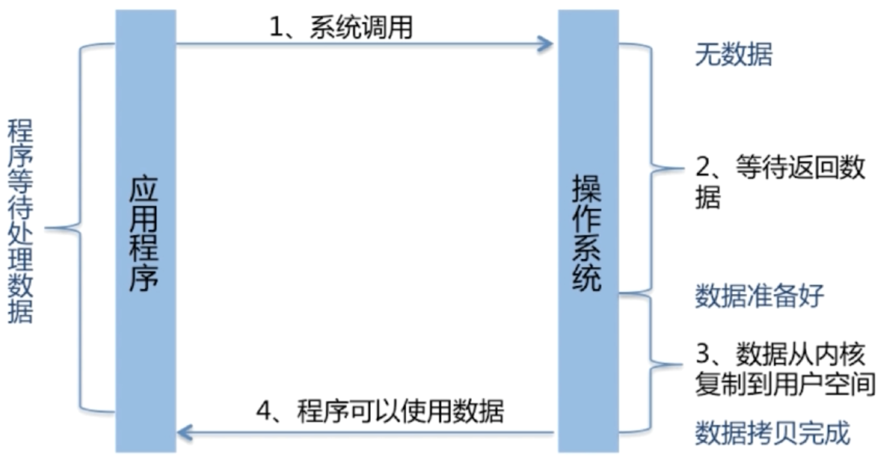
InputSream/OutputStream 字节流 Reader/Writer 字符流
NIO 非阻塞IO
多路复用的、同步非阻塞IO
Channel
- FileChannel
- DatagramChannel
- SocketChannel/ServerSocketChannel
transferTo/transferFrom操作支持channel拷贝，并且这种拷贝可以避免数据从内核复制到用户空间。效率高。
Buffer
- ByteBuffer
- CharBuffer
- Float/DoubleBuffer
- Short/Int/LongBuffer
- MappedByteBuffer
Selector IO多路复用
Selector: 调用系统级别的select/poll/epoll
| 方式 | 最大连接数 | IO效率 | 消息传递方式 |
|---|---|---|---|
| select | 32位机器 32*32=1024；64位机器 32*64=2048 | 对连接线性遍历，随着连接数上升而降低 | 要将数据从内核拷贝到用户空间 |
| poll[与select相似] | 使用链表存储，没有上限。 | 同上 | 同上 |
| epoll | 又上限，但很大。1G机器可打开10万连接。 | 连接数上升影响较小。因为不用遍历连接，活跃连接会调用callback函数通知系统。 | 让内核和用户空间共享一块内存，性能较高 |
AIO 异步IO
对比
| 属性/模型 | BIO | NIO | AIO |
|---|---|---|---|
| 阻塞 | 阻塞，同步 | 非阻塞，同步 | 非阻塞，异步 |
| 线程数[server:client] | 1:1 | 1:N | 0:N |
| 复杂度 | 简单 | 较复杂 | 复杂 |
| 吞吐量 | 低 | 高 | 高 |
Spring
特点
Spring优点
低侵入式: 项目里的类不实现或继承框架里的接口或类。代码污染低。 易扩展: 对其他框架提供支持。如Struts、Mybatis、Hibernate。 解耦: 降低对象之间的耦合，通过IOC容器管理对象，避免硬编码过度耦合。
Spring中的模块
Core Container: 核心容器。 Context: Spring上下文，向Spring提供配置信息 ORM JDBC AOP
依赖倒置&控制反转[IOC]&IOC容器&依赖注入DI 的关系
依赖倒置: 是一种思想。上层模块不应依赖下层模块，而应该依赖其抽象。
控制反转[IOC]: 对象创建和对象之间关系管理原本是用硬编码管理的，现在交给IOC容器管理，这就是控制反转。减少代码之间的耦合。常见的实现方式是依赖注入[DI]。
依赖注入[DI]的4种注入方式:
- setter
- 构造函数
- Annotation注解
- Interface
Srping IOC
支持的功能: 依赖注入/检查，自动装配、支持集合、指定初始化方法/销毁方法、支持回调方法。
IOC初始化过程
https://blog.csdn.net/gchd19921992/article/details/79097969
- BeanDefinition的Resouce定位和读取
- 载入注册
- 生成实例 缓存
Spring IOC容器的核心接口
BeanFactory
功能：
- 提供IOC的配置机制
- 包含Bean的各种定义，便于实例Bean
- Bean生命周期控制、Bean之间的依赖关系管理
BeanFactory体系结构
ListableBeanFactory: 定义了访问容器中Bean基本信息的方法。 HierarchicalBeanFactory: 定义访问父容器的方法。例如父容器不可访问子容器的Bean。SpringMVC是一个子容器可以看父容器[业务层]的Bean，但父容器不能查看SpringMVC的Bean。 ConfigurableBeanFactory: 提供方法去配置BeanFactory。可设置类加载器、属性遍历器等。 AutowireCapableBeanFactory: 定义Bean的自动匹配规则。
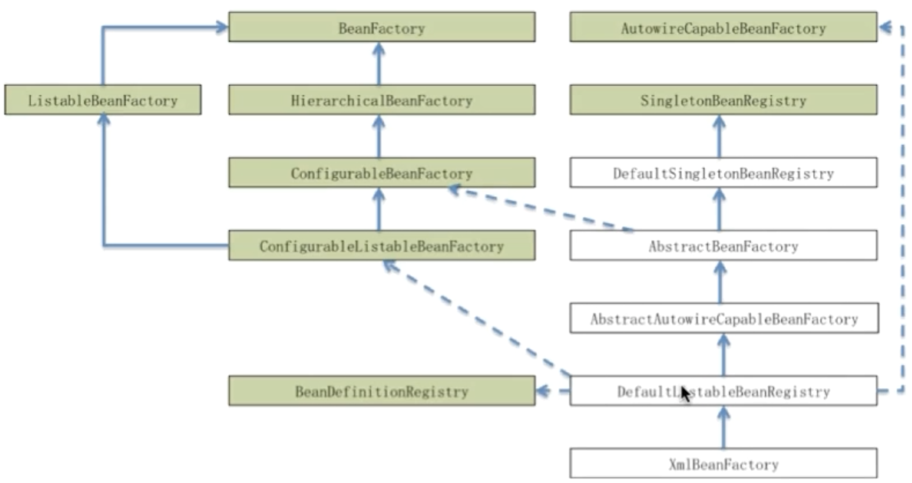
ApplicationContext
与BeanFactory对比: BeanFactory是Spring框架的基础；ApplicationContext是BeanFactory的子接口，具备更多的功能。
BeanDefinition
用来描述Bean的定义，对Bean的配置会转化成BeanDefinition对象。
BeanDefinitionRegistry
提供向IOC容器[BeanFactory]注册BeanDefinition对象的方法:
- (BeanName, BeanDefinition对象) 键值对 放到DefaultListableBeanFactory[BeanFactory的实现类]的beanDefinitionMap中。
- BeanName全部放入beanDefinitionNames中。
xxxxxxxxxxpublic class DefaultListableBeanFactory extends AbstractAutowireCapableBeanFactory implements ConfigurableListableBeanFactory, BeanDefinitionRegistry, Serializable {... // 1 private final Map<String, BeanDefinition> beanDefinitionMap = new ConcurrentHashMap<String, BeanDefinition>(64); // 2 private final List<String> beanDefinitionNames = new ArrayList<String>(64);...
Spring Bean
作用域
- singleton 默认作用域，单例
- prototype 每次获取都会创建新的对象
- request 每个HTTP请求都会创建一个新对象
- session 每个会话都会创建一个新对象
- globalSession
Bean生命周期
创建过程
- 实例化Bean
- Aware [如果实现了Aware接口，注入BeanID、BeanFactory、ApplicationContext来获得IOC容器信息]
- BeanPostProcessor的postProcessBeforeInitialization方法
- InitializingBean的afterPropertiesSet方法
- 定制的Bean init方法
- BeanPostProcessor的postProcessAfterInitialization方法
- 初始化完成
销毁过程
- 如果实现了DisposableBean接口，则调用destroy方法。
- 若配置了destroy-method属性，则调用配置的销毁方法。
Spring AOP
AOP的3中织入方法
- 编译时织入: 需要特殊的编译器，AspectJ
- 类加载时织入: 同上
- 运行时织入: Spring采用的方式。通过动态代理[JDK动态代理/Cglib]实现。
主要名词
Aspect: 通用功能代码。 Target: 被织入Aspect的对象。 Join Point: 可作为切入点的地方，所有方法都可以作为切入点。 Pointcut: 切入点。定义Aspect被用在哪些Join Point切入点中。 Advice: 通知方法。
Advice的种类: Before、After、AfterReturning、AfterThrowing、Around
Spring 事务
事务
| 常量 | 解释 |
|---|---|
| PROPAGATION_NEVER | 不支持当前事务，存在则抛出异常 |
| PROPAGATION_NOT_SUPPORTED | 不支持当前事务，存在则挂起当前事务，以非事务运行 |
| PROPAGATION_SUPPORTS | 支持事务，没有则以非事务方式运行 |
| PROPAGATION_MANDATORY | 支持当前事务，没有则抛出异常 |
| PROPAGATION_REQUIRED | 支持当前事务，没有则新建事务，Spring默认 |
| PROPAGATION_REQUIRED_NEW | 新建事务，如果当前存在事务，则把当前事务挂起。新建事务和被挂起事务是两个独立的事务 |
| PROPAGATION_NESTED | 有事务，则运行在一个嵌套事务中。没有，则新建一个事务 |
隔离级别
| 常量 | 解释 |
|---|---|
| ISOLATION_DEFAULT | 使用平台默认的隔离级别 |
| ISOLATION_READ_UNCOMMITTED | 允许读取未提交数据 |
| ISOLATION_READ_COMMITTED | 只能读取提交了的数据 |
| ISOLATION_REPEATABLE_READ | 可重复读 |
| ISOLATION_SERIALIZABLE | 事务按顺序执行 |
Linux
查找文件命令 find
管道操作符 |
cmd1|cmd2|cmd3
管道左边的输出作为右边的输入
筛选内容命令 grep
-o "pattern" 不显示整行，只显示匹配区域的内容
-v "pattern" 过滤匹配的行不显示
awk
适合处理格式化的内容，可做统计。
一次读取一行，按分隔符进行切片，切成多个部分放入内建变量中$1,$2,...$n，$0表示整行数据
sed
流编辑器，适合用正则表达式处理内容，批量替换、修改。
pipeline
Redis
面试题
海量key中查询出某一个固定前缀的key
- keys 一次性返回所有匹配的结果，数据量大会卡顿
- scan 一次返回部分结果
如何通过Redis实现分布式锁
setnx
setnx key value: 如果key不存在，则创建，返回1。存在则返回0。 时间复杂度: O(1)
实现: 加锁和解锁非原子性操作，容易发生问题。如解锁前程序挂了，就无法解锁。 加锁: setnx key value 解锁: 设置过期时间 expire key time
set
set key value [ex seconds] [px milliseconds] [nx|xx]: ex seconds: 过期时间 单位秒 px milliseconds: 过期时间 单位毫秒 nx: 只在键不存在时进行设置 xx: 只在键存在时进行设置 返回: 成功OK，否则nil
大量key同时过期
问题: 集中过期，清除大量key耗时，会出现卡顿 解决: 过期时间加个随机值
如何hs用Redis做异步队列
rpush+lpop/blpop
使用List作为队列。rpush生产消息，lpop/blpop消费消息。 lpop: 队列空不阻塞 blpop: 队列空则阻塞，直到有消息或超时。
缺点: 只能有一个消费者消费，因为lpop/blpop之后消息就没了
publish subscribe
发布订阅模式。发送者publish发送消息，订阅者subscribe接受消息。 订阅者可以订阅多个频道。
缺点: 消息发布无状态，无法保证消息送达。如订阅者下线后无法收到消息。此时应使用专业的消息队列kafka
Redis如何做持久化
RDB 快照持久化
save: 阻塞Redis服务器进程，直到RDB文件创建完成。 bgsave: fork出一个子进程来创建RDB，非阻塞。若有AOF或RDB在进行，则返回错误
RDB触发点: 根据redis.conf配置save m n [其实用的是bgsave] 主从复制的时候，主节点自动触发 执行debug reload 执行shutdown且没有开启AOF持久化
缺点: 同步的是全部数据，数据量大时会影响性能。 Redis挂掉可能会丢失数据，因为还未触发RDB。
AOF 保存写状态持久化
Appedn-Only-File[AOF]: 记录所有除查询以外的写操作指令。以append的形式追加到AOF文件后面。
AOF文件过大，日志会重写以精简AOF文件: 调用fork，创建一个子进程把AOF写到临时文件中，不依赖原有的AOF文件，主进程将新的变动写到临时文件和原AOF文件中。完成重写后替换原AOF文件。
RDB-AOF混合持久化方式
bgsave做全量持久化，aof做增量持久化。
Redis 数据恢复
启动时，恢复数据，有AOF则忽略RDB。
RDB AOF优缺点
RDB优点 全部数据快照，文件小，恢复快。 RDB缺点 无法保存最近一次快照之后的数据。
AOF优点 可读性高，数据不已丢失。 AOF缺点 文件体积大，恢复时间长。
Memcache和Redis区别
Memcache:
代码层次类似Hash
- 支持简单数据类型
- 不支持数据持久化存储
- 不支持主从
- 不支持分片
Redis:
- 数据类型丰富
- 支持持久化存储
- 支持主从
- 支持分片
为什么Redis这么快
- 基于内存
- 数据结构简单
- 单线程
- 多路复用IO
File Descriptor [FD]
文件描述符
数据类型
- String
- Hash
- List
- Set
- Sorted Set
命令
key相关
del key dump key exists key expire key seconds ttl key type key
String 相关
set key value mset k1 v1 [k2 v2 k3 v3...] setnx key value
get key mget key1 [key2 key3...]
getset key value
Incr key incrby key increment decr key decrby key decrement
strlen key
hash 相关
hset key k1 v1 [k2 v2 ...]
hdel key kn
hget key kn hgetall key
hlen key
list 相关
lpush/rpush key value
lpop/rpop/blpop/brpop key
set相关
sadd key v1 [v2,v3...]
smembers key sismember key vn
spop key srem key vn [v...]
sinter k1 [k2 ...] sunion k1 [k2 ...] sdiff k1 [k2 ...]
scard key
sorted set相关
zadd key score1 member1 [score2 member2]
zcard key
Maven
生命周期
validate compile test package verify install deploy